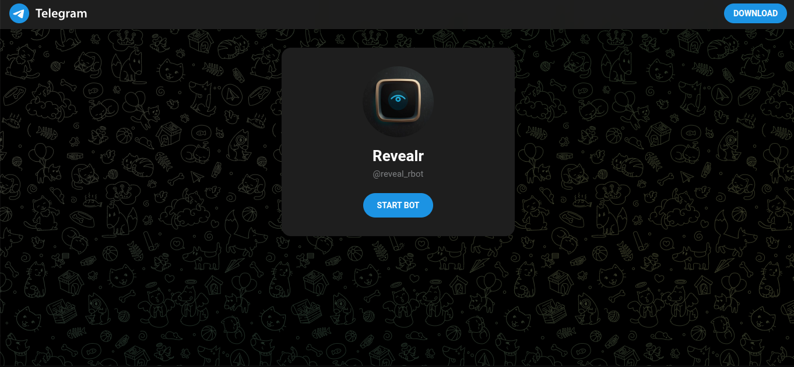
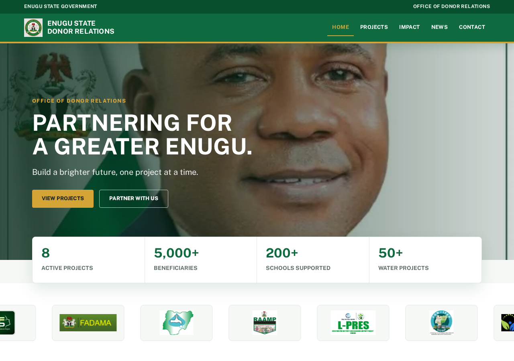
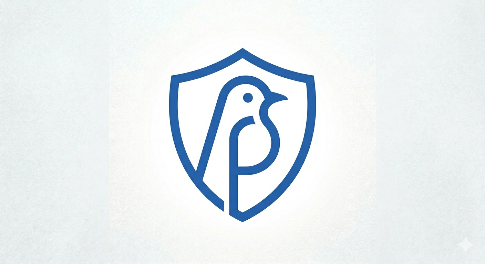
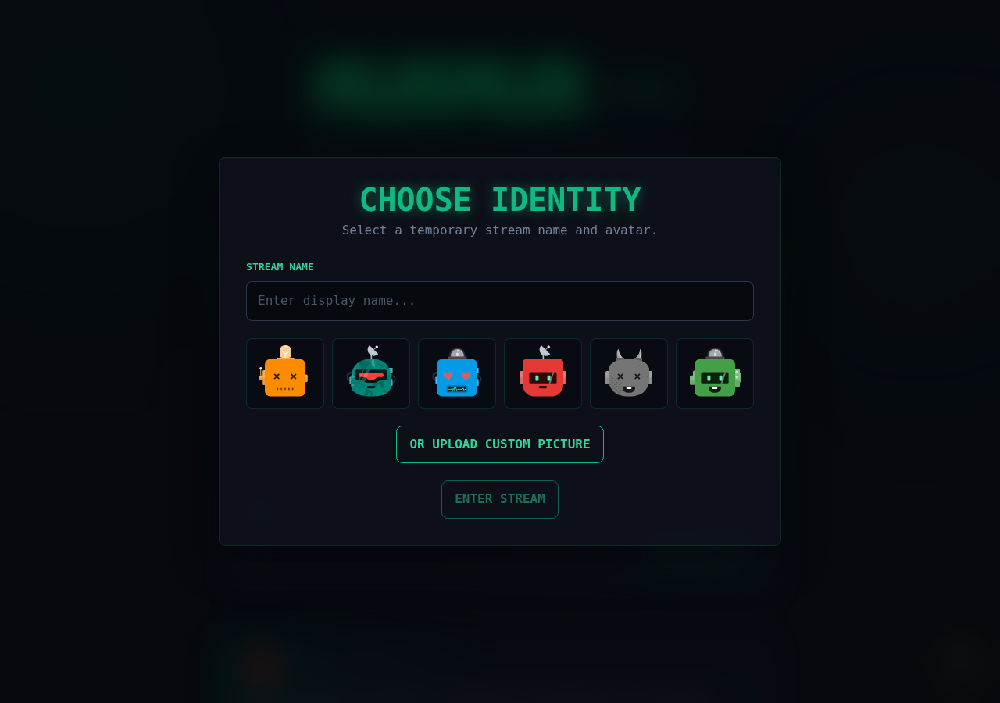

My Projects
Here are some of the web apps and projects I've built. Click on each to view live.

RevealrA Telegram bot that gives people a private place to confess, vent, or ask for advice anonymously.

ESDREnugu state Donor relations website

Resume CreatorA clean, modern web application for building, customizing, and exporting professional resumes in real-time.

MurmurAn anonymous streaming-style app where users choose a temporary identity and join a private digital space.